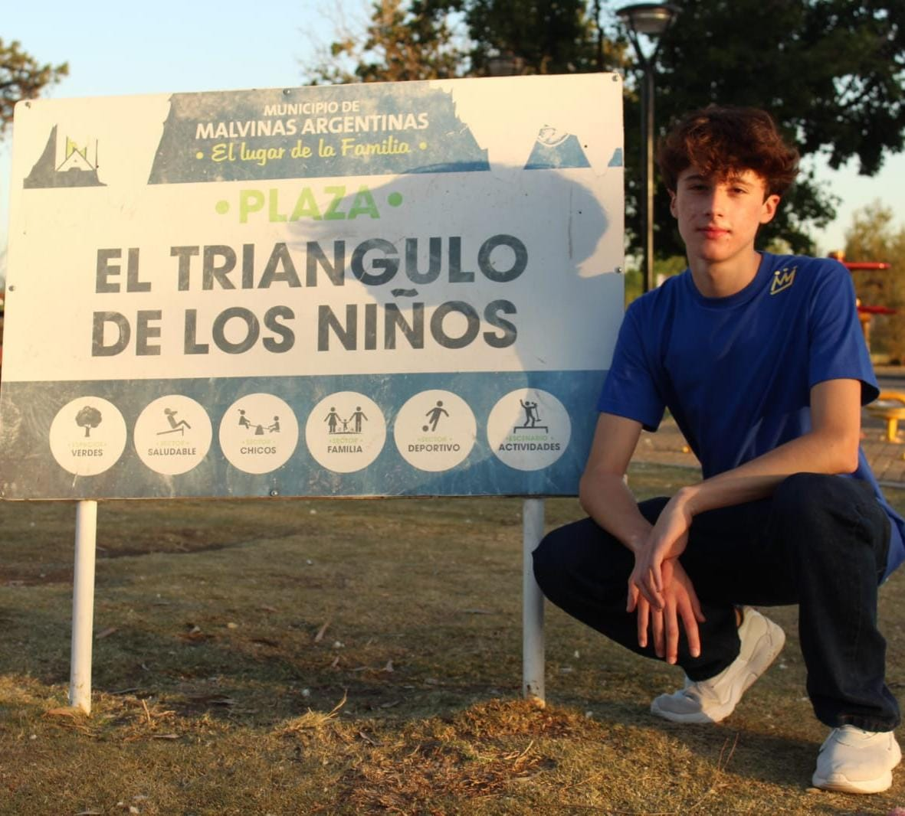

UBICACION:
Falucho 1044
Grand Bourg
Malvinas Argentinas
Buenos Aires, Argentina.
AUTOR 
La plaza"el triangulo de los niños"
conocida mas por el nombre de "el triangulo" o "el triangulito", es un tranquilo lugar para pasar las mañanas o tardes de nuestros fin de semana acompañado de nuestra familia y amigos junto unos buenos mates. Esta plaza tiene una particularidad: como su nombre lo indica, tiene la forma de un triangulo gracias a las 3 calles que lo atraviesan que le dan su caracteristica forma. La plaza cuenta con una gran variedad de actividades, y se encuentra a pocas cuadras del centro de Grand Bourg, permitiendo que puedas acompañar mas tu dia paseando tambien por la zona. En esta pagina encontrar informacion sobre esta plaza, como su historia, o las actividades que podemos hacer en el lugar.